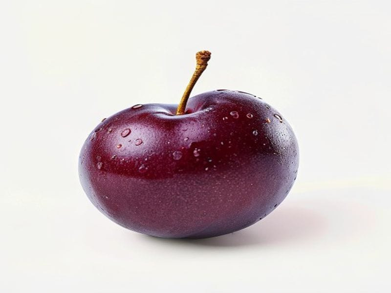

Owoce
Śliwki
Śliwki: 0.7 g białka, 46 kcal, 11.4 g węglowodanów i 0.3 g tłuszczu na 100 g. Kategoria: Owoce.
Kalorie46 kcalna 100 g
Białko / proteiny0.7 g
Węglowodany11.4 g
Tłuszcz0.3 g
Cena (szac.)~1,25 złza 100 g
Ceny zaktualizowano: maj 2026 (szacunek — ceny w popularnych supermarketach)
Porcja: garść (100g)
| Kalorie | 46 kcal |
|---|---|
| Białko | 0.7 g |
| Węglowodany | 11.4 g |
| Tłuszcz | 0.3 g |
| Cena (szac.) | ~1,25 zł |
Szczegółowe składniki odżywcze na 100 g
| Wartość energetyczna (kalorie) | 46 kcal |
|---|---|
| Białko (proteiny) | 0.7 g |
| Węglowodany | 11.4 g |
| Tłuszcz | 0.3 g |
| Tłuszcze nasycone | 0 g |
| Tłuszcze nienasycone | 0.3 g |
| Witaminy i minerały | Witamina K, Potas, Witamina C |
| Współczynnik kcal / 1 g białka | 65.7 |
| Cena produktu (szac. za 100 g) | ~1,25 zł |
| Cena za 100 g białka (szac.) | ~178,57 zł |